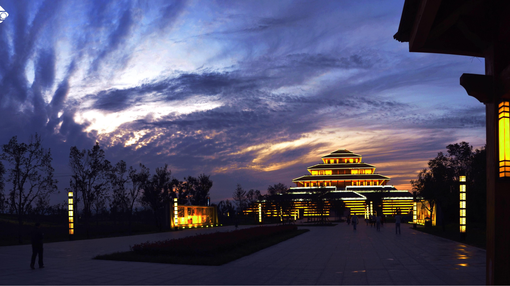
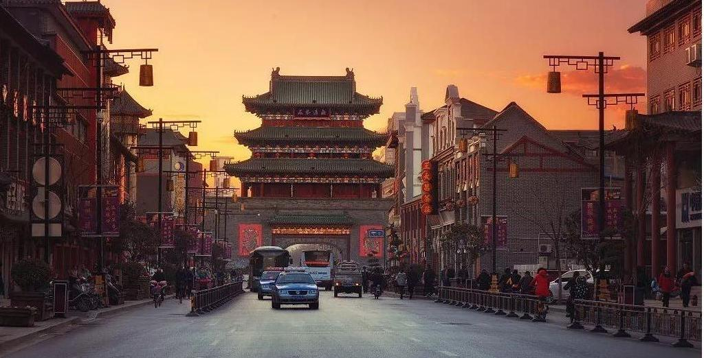

河南，这片古称中原的广袤大地，宛如一部雄浑厚重的史书，每一页都书写着华夏文明的灿烂篇章，是当之无愧的华夏文明重要发祥地。 洛阳的龙门石窟，堪称一座镌刻在石壁上的艺术殿堂。那一尊尊精美的佛像，或慈眉善目，或庄严肃穆，其雕刻工艺细腻入微，从北魏时期的古朴刚健，历经岁月流转，逐渐演变为唐代的丰腴圆润，清晰展现了不同时代艺术风格的变迁轨迹，让后人得以穿越时空，领略古代工匠的卓越技艺与无尽智慧。 安阳殷墟，仿若一把神秘的钥匙，开启了商朝历史的大门。当甲骨文破土而出，那些刻在龟甲兽骨上的古老文字，仿佛在低声诉说着商朝的政治、经济、文化与社会生活，揭开了笼罩在那个神秘王朝之上的层层面纱，为研究华夏早期文明提供了珍贵而详实的第一手资料。 登封的少林寺，悠悠千年屹立不倒，不仅是佛教禅宗的祖庭，更承载着博大精深的武术文化。
在中原大地河南，民俗风情宛如一幅绚丽多姿的长卷，承载着悠久的历史和深厚的文化底蕴，每一处细节都闪耀着河南人民生活的智慧与热情。 戏曲声中，传承着河南人的精神风骨。豫剧，这颗璀璨的戏曲明珠，以其独特的魅力享誉全国。锣鼓敲响，弦音撩拨，演员们粉墨登场，用高亢激昂的唱腔诉说着世间百态。那粗犷豪放的唱词，仿佛能穿透岁月的烟尘，将中原人的豪迈气魄展现得淋漓尽致。无论是《穆桂英挂帅》中穆桂英的飒爽英姿，还是《朝阳沟》里的质朴乡情，都在豫韵悠扬中，深深烙印在人们的心田，成为河南人代代相传的文化记忆。 庙会的热闹，是河南民俗的生动写照。